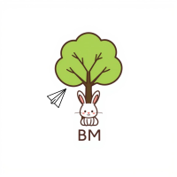

| Welcome to my homepage | ||
|---|---|---|
| 사진 | 소개 | 노래 |
|  |
안녕하세요! 저는 웹 개발을 사랑하는 봉입니다. 이 페이지는 저를 소개하고, 제가 좋아하는 노래나 콘텐츠를 공유하는 공간입니다. 천천히 둘러보고 즐겨주세요! 저를 소개합니다!이름이봉민
이메일xnddl456@jbnu.ac.kr
취미여행, 풋살
MBTIENFP
졸업 후 계획공기업 전산직을 준비할 것 같다.
|
안녕 안녕 안녕 사랑한 그녀가 보내달라 하네요 안녕 안녕 안녕 밤하늘 별들아 그녀 가는 길 비춰주길 ooh 하나만 알려주세요 어디에 살고 있을지 몇년쯤이야 지금의 눈물 쯤은 참을 수 있겠죠 시간이 흘러간데도 십년이 지나간 데도 그때도 사랑이면 난 어떡합니까 어디서 그녈 찾아야 합니까 안녕 안녕 안녕 돌아선 그녀가 멀어져만 가네요 안녕 안녕 안녕 부탁해 빗물아 그녀 눈물을 씻겨 하나만 알려주세요 어디에 살고 있을지 몇년 쯤이야 지금의 눈물쯤은 참을 수 있겠죠 시간이 흘려간 데도 십 년이 지나 간데도 그 때도 사랑이면 난 어떡합니까 어디서 그녈 찾아야 합니까 ▶️ [유튜브에서 듣기 - 더네임] |
| 자기소개 | 영문 자기소개서 | 기술스택 |
|
I’m Bongmin Lee, a student at Jeonbuk National University. I am preparing to become a backend developer. I has been working with JavaScript, Python, and Node.js through various projects and has a strong passion for efficient code writing and problem solving. I is especially experienced in REST API design and database optimization, and aims to maximize team performance through collaboration. For my REST API design project, I created a book management system. This project involves designing a RESTful API for a library or book management application. The main functions are adding, modifying, deleting, and viewing books, and I designed a REST API utilizing HTTP methods and URLs to implement them. I like learning new technologies and applying them in practice to create valuable results. I’m still a work in progress, but I hope you’ll like it |
C++, Javascript, Java, Node.js, Express.js, MongoDB, SQL Developer |
|
| 장소 | 위치 | 추억 |
|
여기는 제가 혼자서 첫 여행을 갔던 곳이며 겨울바다를 즐겼던 곳입니다 ! 겨울이라 많이 춥고 혼자 여행을 해서 많이 낯설었지만 소소한 기억들이 아주 많이 남는 여행이었습니다. 길을 못 찾고 있을 때 일본 현지인이 도와줘서 관광도 해주고 같이 맛집도 다녀주고 술도 마신 기억이 있어 가장 기억에 남는 곳입니다. 저에게는 가장 특별히 기억에 남는 여행지였어서 이 블로그를 보신 분들에게도 추천하고 싶습니다 ! |
||
| 인트로 | 블로그 소개 | 둘러보기 |
|
이 블로그는 제가 알고리즘 및 자료구조를 공부할 때 사용한 블로그입니다. 여러 문제를 풀 때 어떤식으로 풀이를 했는지 기록을 해놓았던 블로그이며, Cpp로 작성 하였습니다. 알고리즘은 정렬부터 문자열 등 다양한 알고리즘들이 있습니다. 아직 미숙하여 많이 작성을 하지 못하였지만 천천히 구경해주세요. |
블로그 둘러보기 | |